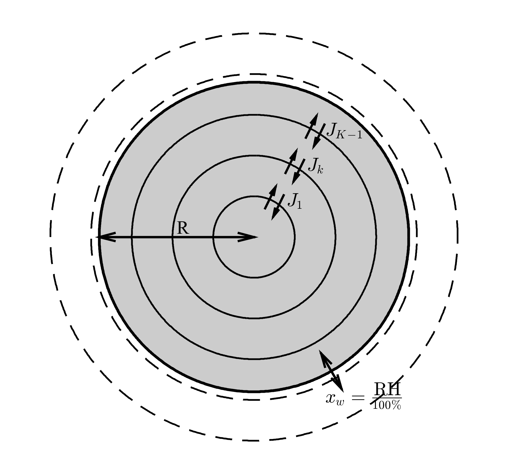

I think that getting my first paper published is as good a reason as any to write a new blog post. So going to tell you about a few of the things that suprised me about the process of publishing a paper, I can't promise that all these things will be interesting or particually note worthy, but they got me through to the end.
- It's not as painful as you think to read the reviewers comments, and leaving it till the next day (or 4 days later) will not change anything. I may or may not have looked at the reviewers comments until my supervisor said that they were ok, however next time the aim is to be more proactive in replying.
- There's a lot more admin than you think, such as organising for the library to cover publishing costs, licensing the code and making it available through open access. In saying this, I know that all these things will still catch me out next time. Maybe I should make a not to remind me to read this post through again next time.
- The people at copernicus publishing are really helpful ... especially if you do not submit a form correctly, which means that you miss you deadline to send in your response to the editor.
- Finally, there are so many things that you learn when publishing a paper, just wish I could remember them. So just going to leave this here so I don't forget about these cool embeddable badges from api.altmetric.com.
Here's the link if you fancy giving it a quick read Maxwell–Stefan diffusion: a framework for predicting condensed phase diffusion and phase separation in atmospheric aerosol.